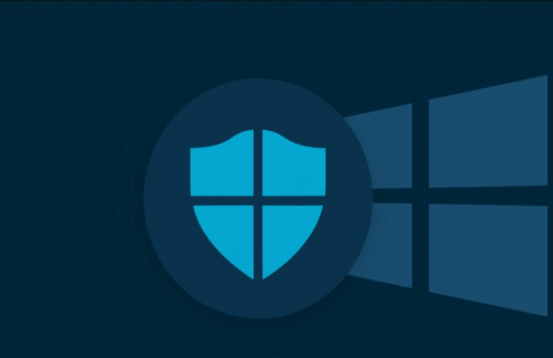

People who work in a field that requires it, like a office job, it might require these anti-virus solutions. This is because they are able to offer more services that can help protect your data. This can include a password manager and a VPN which can help protect your data.

The base level operating system anti-virus is very secure as they are able to offer a lot of the same services as paid anti-virus. This can include a virus scan and the ability to stop any malicious downloads. However these base anti-virus are not able to have the same features as paid anti-virus like VPNs or Password Managers.
